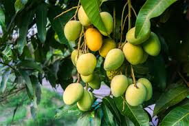

Info Tanaman Banyumanik

Mangga
Kingdom: Plantae
Divisi: Tracheophyta
Class: Magnoliopsida
Ordo: Sapindales
Famili: Anacardiaceae
Genus: Mangifera
Spesies: Mangifera indica
🌱 Budidaya
- Lingkungan: Dataran rendah–sedang (0–500 mdpl), iklim panas & kering, tanah gembur, pH 5,5–7, sinar matahari penuh.
- Penanaman: Jarak tanam 8 x 10 meter, lubang tanam diberi pupuk kandang.
- Perawatan: Siram secukupnya di musim kemarau, pupuk NPK rutin saat berbunga, pangkas cabang tidak produktif, cegah hama.
💡 Fun Fact
"Manisnya Alami, Nutrisinya Tinggi!" — Mangga mengandung vitamin A, C, dan antioksidan yang tinggi — bermanfaat untuk mata, kulit, dan daya tahan tubuh.
🍃 Manfaat
- Menjaga daya tahan tubuh dan kesehatan mata.
- Membantu pencernaan dengan serat dan enzim alami.
- Memperbaiki sel kulit dengan antioksidan, budidaya bernilai ekonomi.